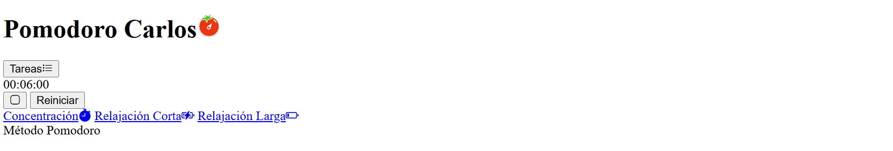
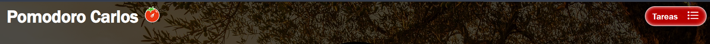
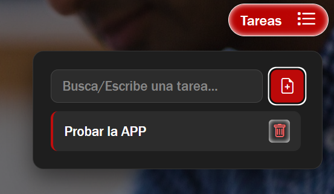
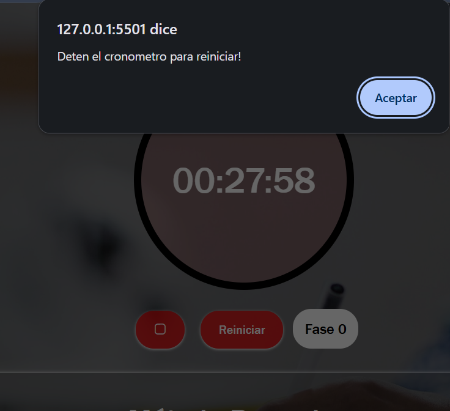
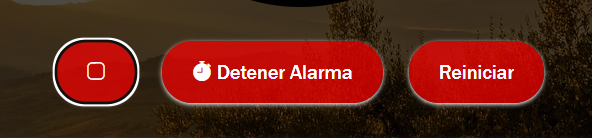

Para el inicio del css, únicamente se ha posicionado los elementos y se ha hecho cambios de tamaño, color y alguna modificación de los bordes y efectos visuales para hacer la aplicación vistosa cara al usuario y hacerla amigable y fácil de usar.

Header Aplicación
Esta sección corresponde al header, en la cuál aparece el bóton para agregar las tareas y el logo con el texto de pomodoro.

Cuándo le pulsas al icono de tareas, se abre un desplegable que te permite agregar tareas y a través del icono de la papelera te permite borrar las tareas.
Cronómetro / Main
Esta sección corresponde al contador de la aplicación la cuál se adapta al método Pomodoro, establecido automáticamente con los tiempos predeterminados y además te permite personalizarte el tiempo.
Se puede personalizar el contador para poner el tiempo que se desee, por defecto estan los valores de: 25m -> Concentración. 15m -> Descanso Largo. 5m -> Descanso Corto. A parte de esto se puede modificar el valor con los iconos de + y - que aparecen en el contador y una vez pulsado el start empezará la cuenta atrás. En caso de que lo queramos reiniciar, se podrá hacer pero necesitamos previamente parar el cronómetro y una vez dado al botón de reiniciar, volverá al valor con el que lo iniciaste.

Como se ve en la imagen, he agregado un badge con el que se puede contemplar cuantas fases de concentración se han realizado, en cada fase redirige a la opción de descanso corto, y cuando llega a la cuarta lo actualiza al descanso largo

Alarma / Main
Es una pequeña modificación que agrega una alarma al cronómetro cuando este termina su tiempo.
El cambio que he comentado en el apartado anterior, se realiza al detener la alarma, pero es vital que se cumpla un rango de tiempo, si no la fase no se va a cumplir.
Navegación / Main
Esta sección corresponde a la navegación del Pomodoro y cada enlace permite de manera automática acceder a los tiempos predeterminados del Pomodoro. Gracias a esta opción los usuarios pueden personalizar sus tiempos del cronómetro, y si quieren volver a los valores predeterminados del Pomodoro cambian a la opción y se les actualiza directamente.
IAs Utlizadas: Gemini, unicamente de apoyo para correcciones de la parte de programación y resolución de errores, además para tareas complejas me ayudó y me aporto ideas